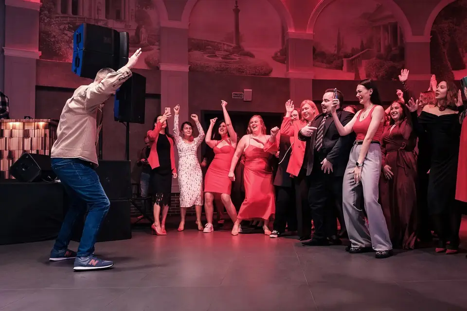
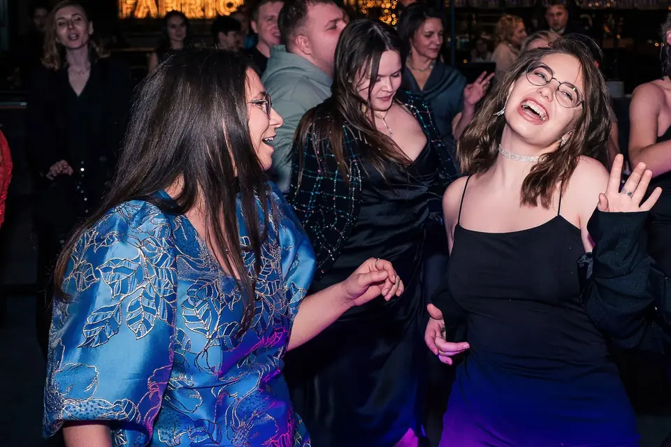
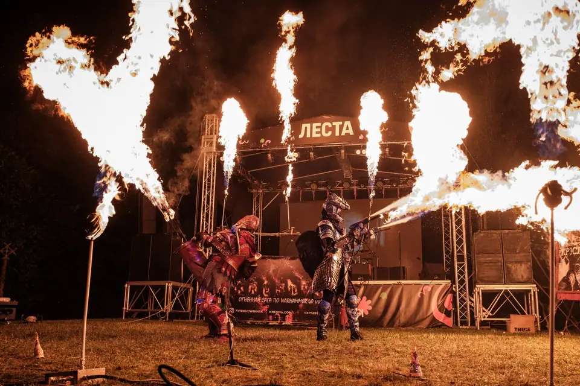
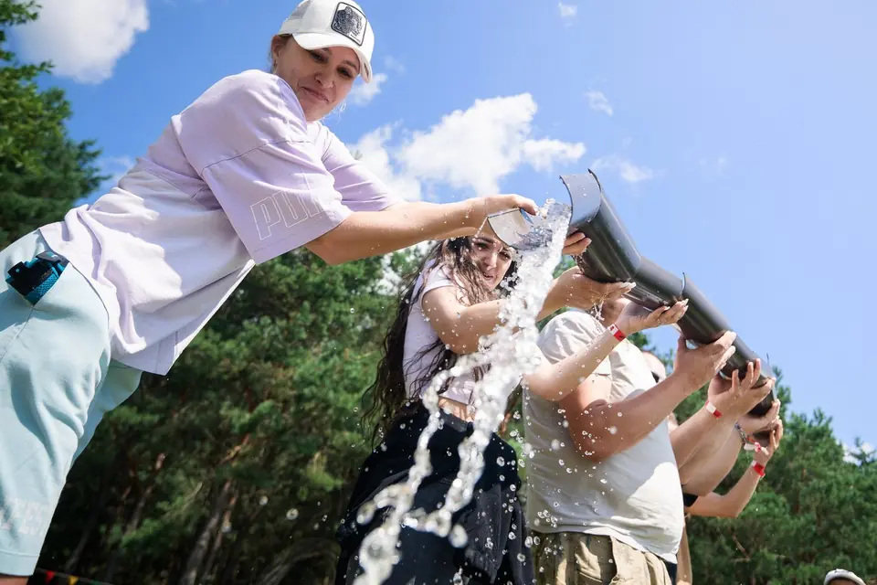
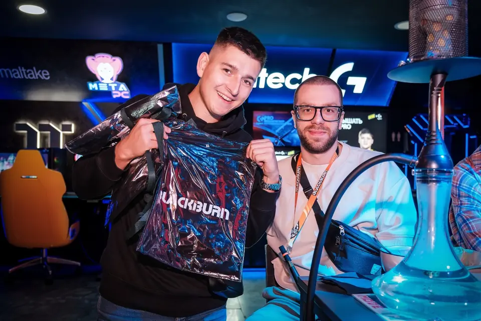
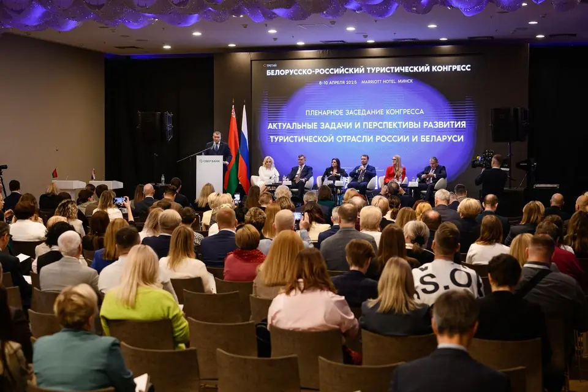
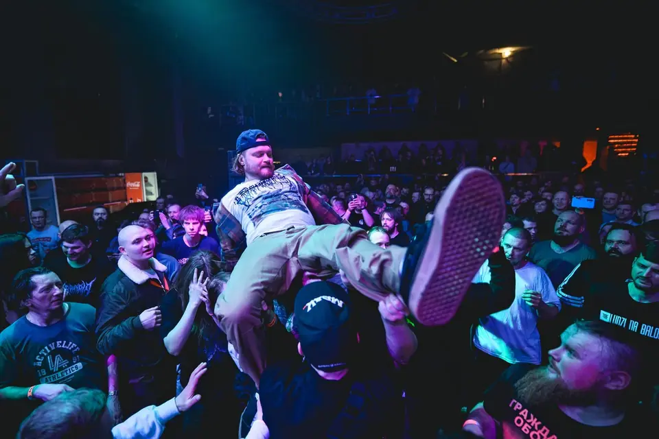

Минск · вся Беларусь · 15+ лет в фотографии
Репортажный фотограф в Минске
Корпоративы, тимбилдинги, квизы и конференции — снимаю события такими, какими они были.
Обсудить съёмкуМероприятия
Главное, что я снимаю. Живые эмоции людей — без постановки и без лишнего внимания к камере.
Также снимаю


Как я работаю
01Заявка
Пишете в Viber, звоните или пишете в Instagram: дата, место, формат события.
02Обсуждение
Уточняем программу, ключевых людей и важные моменты.
03Съёмка
Работаю незаметно и снимаю то, что происходит на самом деле.
04Результат
Отобранные и обработанные фото в удобной онлайн-галерее.